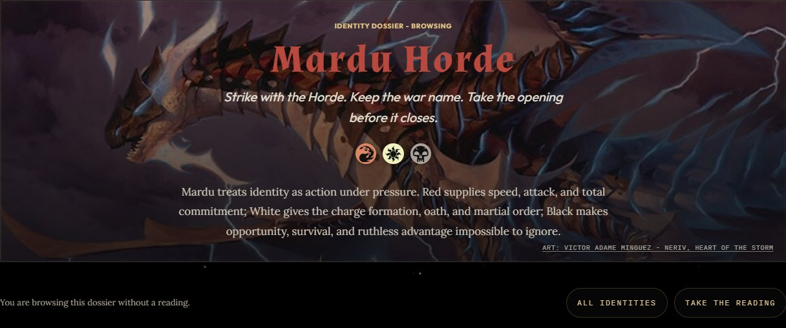
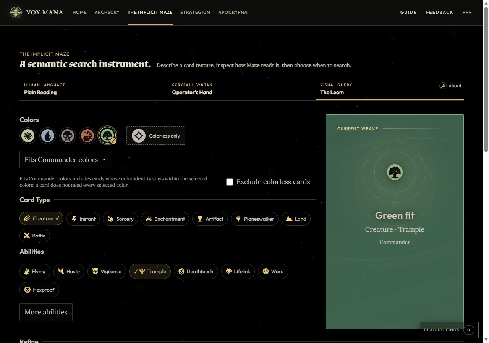

Problem
Creative identity systems can become vague fast when data, lore, UI, and generated output all blur together.
Active builder laboratory
Commander color identity placement, data modeling, visual UX, and source governance.
Creative identity systems can become vague fast when data, lore, UI, and generated output all blur together.
Build a source-governed Commander color identity placement system that feels useful, visual, and maintainable.
HTML, CSS, JavaScript, generated JSON, visual regression checks, Codex-assisted workflows.
No confidential data, source-first governance, public copy must stay understandable, generated data must not become source authority.
Archscry connects a Commander identity reading to a dossier. The Implicit Maze offers plain-language, syntax, and visual card discovery. Strategium teaches table concepts; Apocrypha exposes the source notes and their limits.
In my July 9, 2026 build note, I described a static reference page fetching card art live. It looked finished but depended on another service at runtime. I removed that fetch and cached the required art at authoring time.
Source records → generated JSON → the browser view. Each step needs to preserve the meaning it received. A matching page and dataset can still share the same wrong assumption: traceability needs evidence behind it.
These are public product views captured from voxmana.io on October 2, 2026. The dossier below is being browsed without taking a reading; the Loom shows selected filters before a search is submitted.


See the source library for what the project's references can support, or use the Guide to choose your next path.